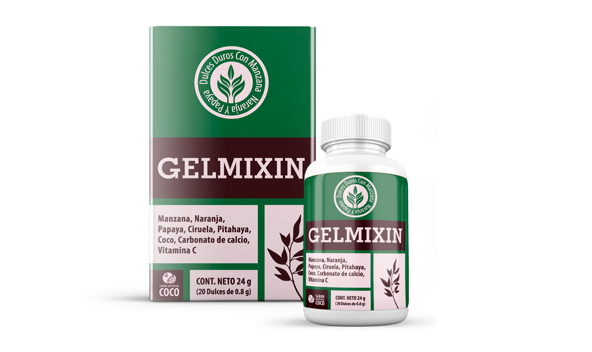

Todas personas que haya sido identificado parásitos, hace la pregunta: ¿cómo retirar el fin de no dañar el cuerpo? En la actualidad, la industria farmacéutica nacional y extranjera ofrece una categoría de pacientes, una gran cantidad de fondos destinados a combatir los gusanos. La elección del fármaco debe prestar atención a su capacidad para la eliminación rápida de los parásitos, no se debe ignorar el tema de la restauración de los tejidos y la eliminación de la intoxicación dañadas. La mejor manera de salir de esta situación sería el medio por el cual los parásitos frente fácilmente tanto con los gusanos y hongos, así como con la más sencilla. Tener un curso de tratamiento con este preparato, la gente será capaz de llevar a cabo una limpieza del organismo completo.
La composición de los comprimidos no incluye los transgénicos, por lo que no tendrá ningún impacto negativo en el cuerpo humano.
Muchas personas están interesadas en la cuestión de cómo aplicar las píldoras para obtener la máxima eficiencia. Sin embargo, ellos prestan mucha atención a la cuestión de la seguridad, ya que la mayoría de los medios tradicionales hay diferentes efectos secundarios. es una herramienta versátil que muestra la gente usa sin restricciones en la presencia de las siguientes especies de parásitos:
El uso de este producto, la gente será capaz de resolver los problemas graves con su flora normal no se verá afectada de ninguna manera. Gracias a la composición natural, en medio de su uso, pacientes de no tendrá ningún lado se producen efectos. la seguridad y eficacia de este fármaco absoluta se ha demostrado en el curso de las pruebas repetidas. Se les mostró cómo hacer que las personas infectadas con parásitos, y los que tienen resultados negativos de los estudios de laboratorio de material biológico. Para ellos, el producto servirá como un agente profiláctico, ya que la humanidad contacto diario con diferentes entornos y los objetos que están presentes en la superficie de microorganismos dañinos o sus larvas.
Cada persona puede poseer, sin un examen especial de laboratorio para determinar si tiene un parásito en el cuerpo o no. Para ello, se debe pasar una pequeña prueba, cuyos resultados dará una respuesta positiva, de disipar todas las dudas existentes. Se le pedirá al paciente para responder si tiene unos u otros síntomas:
Si al final de probar que una persona se revelará al menos un síntoma, entonces él tiene que tomar medidas de emergencia, y por este medio para llevar a cabo el tratamiento antiparasitario del cuerpo. Este medicamento es capaz de destruir los microorganismos, incluso los que hasta ahora no se han estudiado a fondo por la medicina moderna y con frecuencia no son detectados en el diagnóstico de laboratorio.
Las propiedades únicas de las tabletas hacen que algunos pacientes piensan, - engaño o la verdad? Para obtener respuestas a todas sus preguntas, que deben familiarizarse con los beneficios de este medicamento. En primer lugar, este agente antiparasitario es capaz de trabajar en varios tipos de gusanos, que no pueden "presumir" medicamentos tradicionales. En segundo lugar, ha demostrado ser eficaz incluso en la presencia en el cuerpo humano protozoos tales como Giardia, clamidia, etc. G., Para la eliminación de los cuales por lo general requiere la terapia con medicamentos compleja. En tercer lugar, no sólo destruye las plagas, sino que también tiene efectos beneficiosos sobre el proceso de recuperación de los tejidos afectados. Además, el comprimido se elimina intoxicación, en desarrollo debido a la acumulación de productos metabólicos dañinos de los microorganismos.
El uso de este producto para el propósito de eliminar los parásitos del cuerpo, para eliminar diversos problemas y enfermedades que se desarrollan como resultado de la infección con gusanos y otros microorganismos dañinos. Hoy en día, las estadísticas muestran que un gran número de personas son portadores de parásitos y sus larvas. Es por eso que se recomienda tomar antiparasitario , que tiene el siguiente efecto en el cuerpo:
puede ser utilizado no solamente como medicamentos contra parásitos. Las tabletas son una excelente herramienta preventiva que protege al cuerpo humano de la penetración de la infección.
Antes de utilizar tabletas recomiendan que lea las instrucciones cuidadosamente.
Si utiliza estas pastillas con fines terapéuticos, los pacientes deben someterse a un ciclo completo (2 semanas). Si se toma el medicamento para la prevención de parásitos, a continuación, se debe hacer dos veces al año, en primavera y otoño, la estación de la exacerbación de diversas enfermedades (organismo debilitado es susceptible a la infección por parásitos y otros microorganismos).
Los pacientes que han decidido tomar para deshacerse de los parásitos, ya una semana más tarde será capaz de sentir el mejoramiento de la salud. Muchos de los síntomas que se producen en el contexto de parasitismo de los gusanos y las bacterias comienzan a desaparecer unas semanas después de empezar a tomar . Los expertos recomiendan en caso de enfermedades infecciosas no retrasar el tratamiento, como los gusanos pueden entregar los problemas muy graves:
Según muchos expertos, la presencia de parásitos en el cuerpo humano - un fenómeno frecuente y bastante explicable. Las personas infectadas con gusanos y otros patógenos en diferentes edades, algunos de ellos expuestos repetidamente a la infección. Debido a este problema pacientes gestionar bastante fácil y segura de manejar. Aquí hay algunos médicos acerca de las opiniones del producto:
Una vez en el cuerpo humano entran las larvas de parásitos, es comenzar inmediatamente la vida activa. En tiempo de Unión Soviética , la infección puede causar complicaciones graves. Estoy seguro de es un gran medicamento que se puede utilizar para tratar y prevenir los gusanos y otros microorganismos dañinos. Sus pacientes designo como los principales agentes antiparasitarios. Necesitan tomar durante 2-4 semanas, dependiendo del grado de infección. Absolutamente no veo el momento de tomar medicamentos costosos para la solución de este problema, como hace frente a ella. Soy responsable de mis palabras, a menudo como tengo mucha experiencia en la sala del hospital infeccioso y en la práctica utilizar esta herramienta.
Luis Cabrera, infectólogo
()
A menudo me encuentro con el problema que yo gelmintizatsii refiero regularmente a las personas con síntomas característicos de diversas enfermedades. En su estudio revela la verdadera razón - parásitos, que envenenan los productos de desecho del cuerpo y dar lugar a toxicidad. En este contexto, hay una exacerbación de enfermedades, especialmente las que tienen un curso crónico. Yo recomiendo a mis pacientes a someterse a tratamiento en paralelo con la recepción , que puede ser fácilmente hecho en casa. Después de un nuevo examen suele ser la causa de la enfermedad se elimina por completo. Creo que eso significa, en la práctica, ha demostrado ser eficaz en la lucha contra los parásitos, lo que es bastante posible utilizar como el remedio principal para la infección por diversos gusanos.
Luis Cabrera, infectólogo
(
)
Esta herramienta está en demanda de su consumo entre las personas que prestar mucha atención a su salud y prefieren tratar sólo uso seguro y eficaz. En la demanda en esta preparación lo demuestran los numerosos testimonios de personas. En nuestro sitio los usuarios de Internet pueden obtener información detallada sobre , comentarios que ayudarán a determinar si es eficaz en la lucha contra las plagas:
Quiero dejar su opinión sobre esta droga. Hace unos meses empecé a tener problemas de salud. Durante el examen, el médico me envió a un laboratorio para pruebas de parásitos. Cuando llegué a los resultados, fue un gran shock. Soy muy sensible a su salud observando cuidadosamente la dieta, la higiene. En el que podía atrapar, no puedo ni siquiera imaginar. Cuando llegó a la recepción para el médico, que ha adivinado ¿cuánto tiempo durará la receta. Para mi sorpresa, mi médico no me ha asignado ningún medicamento y aconseja aplicar durante 4 semanas . Todavía hice lo que me dijo, los parásitos se han ido del todo, como lo demuestra el resultado del análisis. Muy agradecido con el médico para obtener lo que él no rellenar mi química, y designó un medio eficaz y seguro.
He comprado estas pastillas a mi hermano que está en contacto constante con su mascota - perro. Que estaba infectado con helmintos. Aprobada por supuesto, como se indica en las instrucciones, se han entregado los análisis - negativo. Muy contentos de haber encontrado .
Cada paciente que quiere deshacerse de los parásitos, o pasar su prevención, buscando adquirir un medicamento tal, el costo de los cuales se instalará en la gama disponible. Es por ello que muchos de nuestros visitantes son principalmente interesado en las tabletas precio. El estudio de la fijación de precios de otras empresas especializadas en la fabricación de agentes antiparasitarios, se puede señalar que la herramienta tiene un valor democrático es plenamente acorde con su alta calidad. Con la compra de este fármaco en el sitio web oficial, la gente no va a pagar más por los servicios de los intermediarios, así como el pago de diversas marcas económicamente razonables.
Muchas personas están interesadas en la cuestión, donde comprar ? Esto es debido al hecho de que el público y las farmacias privadas imposible encontrar una herramienta que hace directamente por el fabricante. Si el pueblo y la "suerte" de ver en medio de visualización, entonces lo más probable es que sea un producto falsificado. Los clientes que se animaron a comprar uno de estos vehículos pueden perder no sólo las finanzas sino también la salud, ya que los componentes más baratos y de mala calidad se utilizan normalmente en la fabricación de billetes falsos. Para adquirir este producto a través de tiendas en línea no oficiales también puede conducir a problemas graves. A menudo, a través de las redes comerciales virtuales falsificación, que es imposible pasar después de volver y devolver el dinero gastado en ellos vendidos. La única solución en este caso es comprar en la página oficial, donde se puede leer la opinión del consumidor sobre este producto. Todos los visitantes se les garantiza un producto de alta calidad, para que puedan resolver rápidamente sus problemas.
Nuestro equipo está formado por especialistas altamente cualificados, que tienen experiencia y amplios conocimientos en el campo de la farmacología. Prestamos mucha atención a cada cliente, por lo que somos capaces de resolver cualquier duda y para satisfacer plenamente sus necesidades en una fármacos terapéuticos eficaces. Nuestros expertos le proporcionará a cada visitante del sitio que quiere comprar , el asesoramiento necesario y de manera expedita en la que puede colocar su orden.
Para comprar agente antiparasitario de alta calidad la gente tiene que visitar la página web oficial. Para ordenar los usuarios de Internet deben llenar un formulario en el siguiente enlace. Después de confirmar el operador y el envío del proveedor de la aplicación de esta herramienta se comunicará con el cliente y por teléfono para discutir todos los detalles y matices de la próxima compra. Una vez que el pedido se transmite a la obra han sido resueltos entre las partes. La entrega de pastillas antiparasitarias a través del correo, donde, en el momento de recibir el paquete, el cliente debe pagar el costo. Si usted tiene alguna pregunta, pueden pedir por teléfono al representante oficial de la empresa.